Based on the educational presentation Wards of the World
Wards of the World: Learn the English of Protection Charms and Cultural Intention
Discover how a thread, a horn, a pouch, salt, a broom, and bamboo chimes reveal the vocabulary of protection, the power of metaphor, and the grammar of cultural rules.
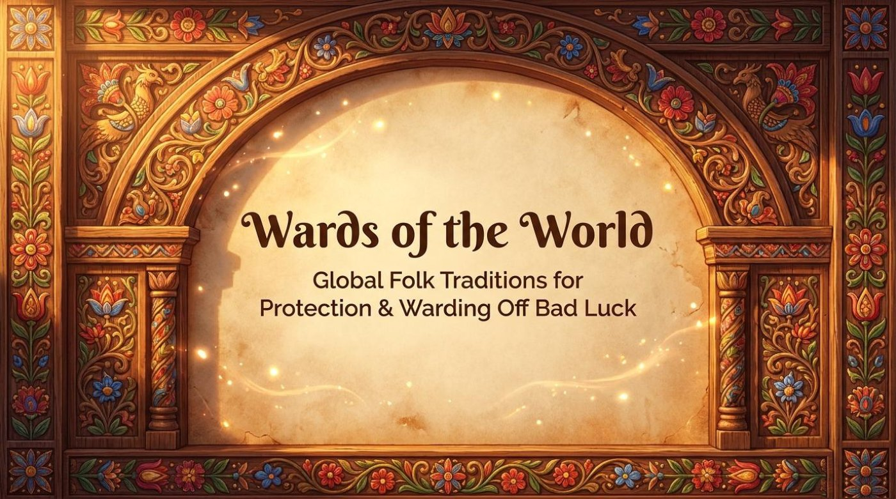
Introduction: Small Objects, Large Meanings
Every culture keeps a small object near the body or beside the door and gives that object a job larger than its size. A thread can absorb jealousy. A horn can deflect envy. A broom can guard a threshold. These objects turn abstract fears into concrete shapes, and they turn everyday language into a map of human care.
The educational presentation Wards of the World uses these traditions to teach more than folklore. It introduces precise English expressions such as ward, meaning a protective charm or guard, ward off, meaning to push away misfortune or danger, cleanse, meaning to remove unwanted energy, and harmonize, meaning to bring energy into balance. Its key learning goal is clear: English learners can describe not only what an object is, but also what it is believed to do and which cultural rules activate its meaning.
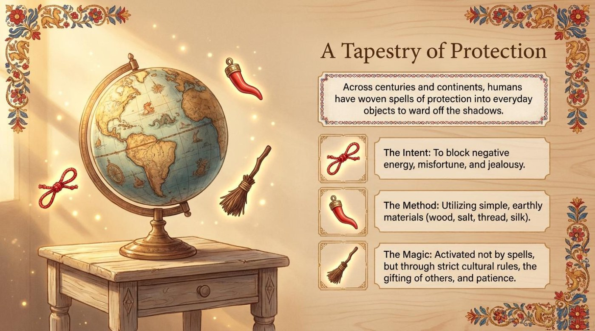
Content and Context: The Logic of Folk Protection
A tapestry woven from ordinary things
The presentation begins with a striking metaphor: “Across centuries and continents, humans have woven spells of protection into everyday objects to ward off the shadows.” The word woven presents culture as a tapestry, while shadows gives fear a visual form. This pairing makes abstract belief easier to describe in English because it creates a picture.
The material organizes the topic through three compact statements:
- The Intent: “To block negative energy, misfortune, and jealousy.”
- The Method: “Utilizing simple, earthy materials (wood, salt, thread, silk).”
- The Magic: “Activated not by spells, but through strict cultural rules, the gifting of others, and patience.”
💡 The key point is that the “magic” follows a system. Language learners can imitate that system by naming the object, explaining its purpose, and identifying its rule. A precise sentence such as “The red string absorbs jealousy and must fall off naturally” is stronger than a vague sentence such as “It is lucky.”
Practical language practice: Use the pattern artifact + function + rule. This pattern builds fluency because it can describe the red string, the cornicello, the omamori, the besom, salt, and bamboo chimes with the same clear structure.
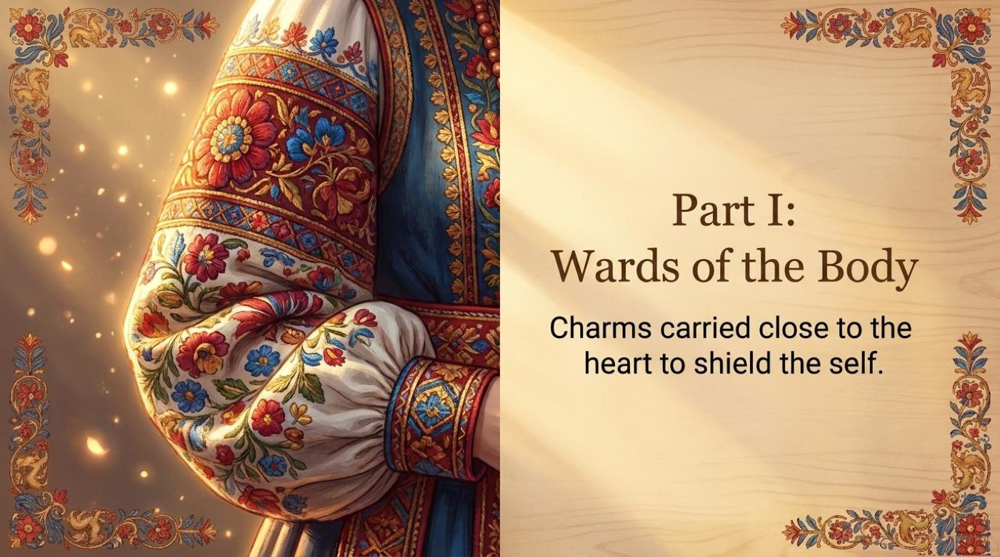
Charms carried close to the heart
The first group is called “Wards of the Body”, with the explanatory line “Charms carried close to the heart to shield the self.” The phrase carried close to the heart makes protection emotional as well as physical. It suggests that the object matters because of the relationship attached to it.
The red string is presented as a global tradition connected with Kabbalah, Buddhist, and Hindu traditions. The material describes it as “a thin red thread worn around the wrist as a personal shield against misfortune, jealousy, and negative energy.” Its lifecycle gives learners a useful sequence of verbs:
- Tied: “Tied on by a loved one or a spiritual leader; it is traditionally not tied by the wearer.”
- Worn: “Acts as a sponge, silently absorbing jealousy and negative energy over time.”
- Released: “Must never be cut with scissors. It frays and falls off naturally—the ultimate sign that it has absorbed all the negative energy it could hold.”
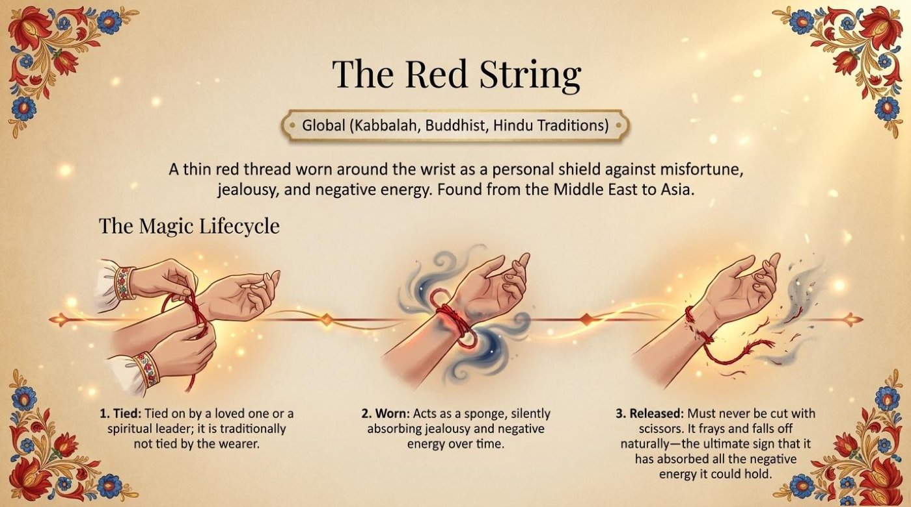
The language lesson inside this tradition is the contrast between personal choice and inherited rule. The wearer does not traditionally tie the string alone, and the wearer does not remove it with scissors. The grammar of must never is essential because it communicates a strict prohibition.
The Italian cornicello, or Italian horn, adds another rule. The material explains that this twisted charm is worn as a necklace or hung in cars and homes to protect against the malocchio, meaning the evil eye. Its shape “mimics a red chili pepper or an animal horn to pierce through bad luck.” Its golden rule is social: “A Cornicello holds no power if bought for yourself. Folk tradition dictates it must be given to you as a gift by someone who genuinely wishes you good luck.”
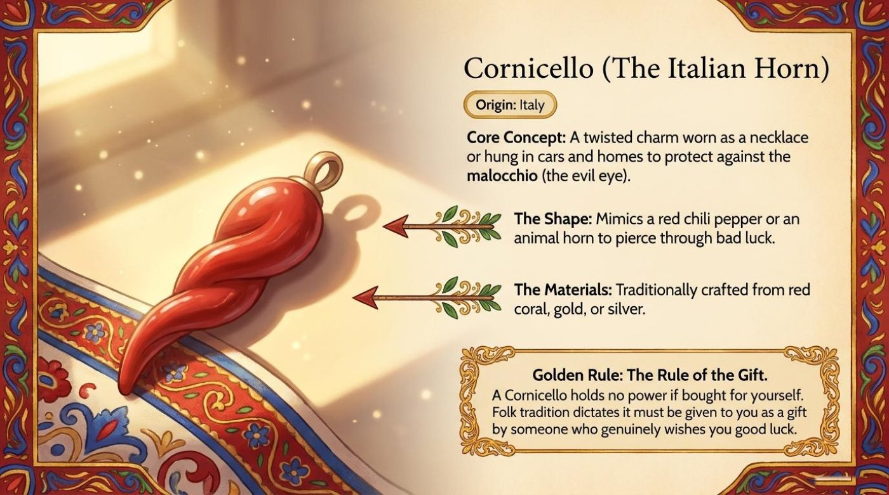
The Japanese omamori shifts the focus from deflecting harm to granting specific blessings. The material calls it “Small, colorful silk pouches sold at shrines and temples” and explains that they are tied to backpacks, wallets, or cars for safe travel, good health, or passing exams. The sealed nature of the charm is crucial. Inside is “a sacred wood or paper prayer blessing,” but the pouch must never be opened because “peeking lets the protective magic escape and immediately cancels its power.”
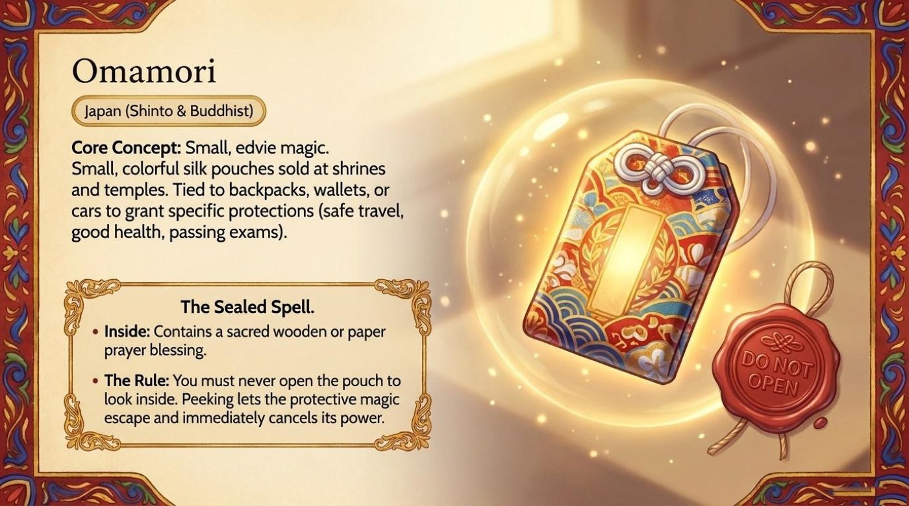
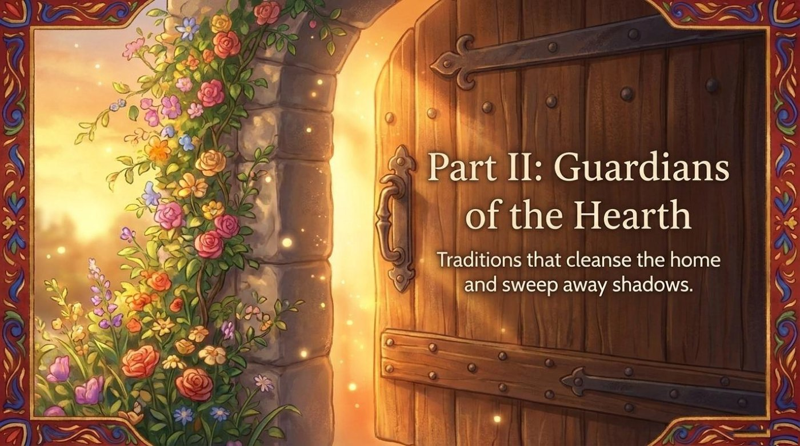
Guardians at the threshold
The second group is called “Guardians of the Hearth”, described as “traditions that cleanse the home and sweep away shadows.” The hearth represents the center of home life, while the threshold marks the boundary between the outside world and domestic safety.
The European and North American besom, or witch’s broom, is a handmade broom of natural twigs tied around a wooden handle. It is kept beside the front door or fireplace “to sweep away negative energy and block bad luck.” The folklore mechanism is especially vivid. The broom at the threshold acts as a puzzle for negative entities. Old European folklore claims that evil spirits must count every straw before entering the house, and the tedious counting keeps them busy until sunrise forces them to flee.
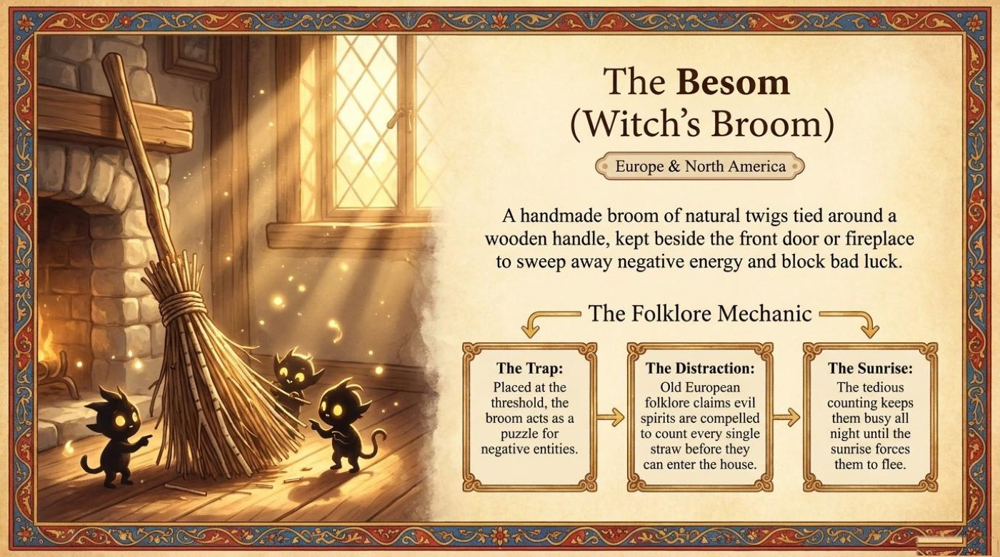
Salt draws its protective power from everyday experience. Because salt preserves food and prevents spoiling, ancient cultures viewed it as a pure substance capable of blocking bad luck and cleansing a home. The spatial rule is exact: a thin line of salt is sprinkled across the front doorstep to block negative forces, while small bowls placed in room corners cleanse stagnant energy. The material also records a modern echo: in Japan, restaurant owners and sumo wrestlers still throw small piles of salt near entrances to purify the space and welcome good fortune.
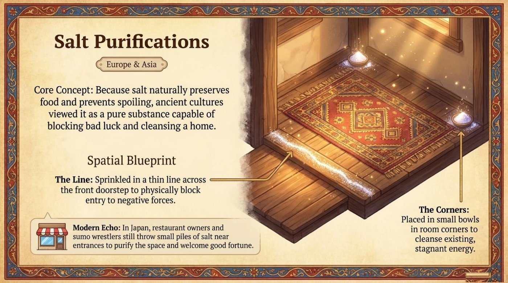
The Chinese bamboo wind chime protects through sound. Hollow bamboo tubes hung near windows, balconies, or doors create a soft wooden clicking sound in the breeze. According to the material, the gentle movement and natural sound “physically break up unlucky, stagnant energy.” Bamboo is favored because “bamboo’s earthy, soft tone calms the space and seamlessly invites harmony into the home.” Loud metal bells might startle positive energy away, so softness becomes part of the protection.
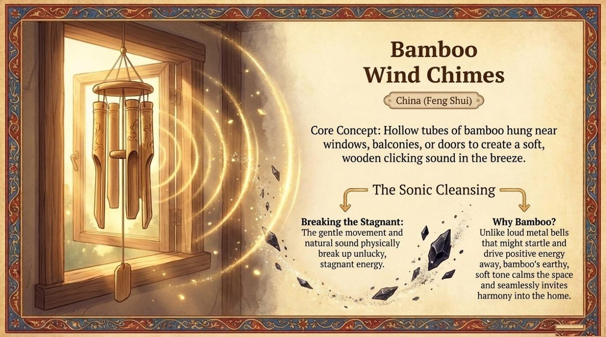
Rules that activate the magic
The presentation’s summary states that “across all cultures, protection magic requires strict adherence to tradition.” Each artifact has a function and a golden rule:
- Red string: absorbs jealousy, but it must fall off naturally and must never be cut with scissors.
- Cornicello: deflects the evil eye, but it must be a gift rather than a purchase for oneself.
- Omamori: grants specific blessings, but it must remain sealed.
- Besom: guards the threshold, and the straw count distracts spirits until sunrise.
- Salt: cleanses the space, but it must be placed precisely at entryways or room corners.
- Bamboo chimes: harmonize energy, and soft wood is preferred over startling metal.
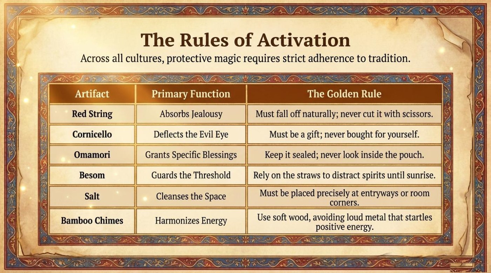
📌 A useful classroom application is to transform these rules into conditional statements. Learners can practice forms such as “If the string is cut, its protective purpose is lost” and “Unless the cornicello is received as a gift, it holds no power.” This connects folklore with grammar while keeping the original meaning intact.
Vocabulary and Language Takeaways
The vocabulary of this lesson works like a set of compact cultural codes. Each term links a literal meaning to a figurative meaning, and the quoted material shows how the figurative meaning operates.
Ward noun
Literal meaning: a guard, protector, or defensive barrier.
Contextual meaning: an object believed to protect a person, home, or space.
Example from the material: “Wards of the World” and “Global Folk Traditions for Protection & Warding Off Bad Luck.”
How the material explains it: The title groups many objects under one category, showing that a ward is not merely decorative. It is defined by its protective function.
Ward off phrasal verb
Literal meaning: to push away or turn aside something unwanted.
Contextual meaning: to prevent misfortune, jealousy, or negative energy from causing harm.
Example from the material: “humans have woven spells of protection into everyday objects to ward off the shadows.”
How the material explains it: The phrase gives action to the ward. The object does not simply exist; it works against danger.
Absorb verb
Literal meaning: to soak up or take in a substance.
Contextual meaning: to take in negative energy gradually and silently.
Example from the material: “Acts as a sponge, silently absorbing jealousy and negative energy over time.”
How the material explains it: The sponge comparison makes an invisible process feel physical and easy to visualize.
Malocchio Italian noun
Literal meaning: “evil eye” in Italian.
Contextual meaning: harm believed to come from envy or a hostile gaze.
Example from the material: “to protect against the malocchio (the evil eye).”
How the material explains it: The parenthetical translation makes the borrowed term accessible while preserving its cultural identity.
Sealed spell noun phrase
Literal meaning: magic or words enclosed inside something.
Contextual meaning: a blessing hidden inside an omamori pouch.
Example from the material: “Inside: Contains a sacred wood or paper prayer blessing.”
How the material explains it: The rule against opening the pouch shows that protection depends on keeping the blessing enclosed.
Threshold noun
Literal meaning: the entrance or doorway of a building.
Contextual meaning: a symbolic boundary between the dangerous outside and the protected home.
Example from the material: “Placed at the threshold, the broom acts as a puzzle for negative entities.”
How the material explains it: The word turns a physical doorway into a spiritual checkpoint.
Cleanse verb
Literal meaning: to make clean or pure.
Contextual meaning: to remove bad luck, negative energy, or stagnation from a space.
Example from the material: “capable of blocking bad luck and cleansing a home.”
How the material explains it: Salt’s ordinary power to preserve food becomes a metaphor for spiritual purification.
Harmonize verb
Literal meaning: to bring different parts into agreement or balance.
Contextual meaning: to create balanced, peaceful energy in a home.
Example from the material: “Harmonize Energy” and “seamlessly invites harmony into the home.”
How the material explains it: Bamboo chimes protect by creating balance rather than by attacking a visible enemy.
Interactive vocabulary cards
Flip each card to review the literal meaning, contextual meaning, example, and reason the term matters.
Deeper Meaning: Metaphors and Symbols
1. The shadow as a name for invisible harm
The phrase “to ward off the shadows” transforms an abstract fear into a dark shape that can be pushed away. This matters for language learners because metaphor gives emotion a noun. Instead of saying only “people fear bad things,” the material says that humans protect themselves from shadows.
2. The red string as a sponge
The red string metaphor, “acts as a sponge,” presents jealousy and negative energy as substances that can be soaked up. The image explains the rule at the center of the tradition. A sponge becomes full, and the string eventually frays and falls away. The natural ending confirms that the object has absorbed all it can hold.
3. The horn as a pointed defense
The cornicello’s shape “mimics a red chili pepper or an animal horn to pierce through bad luck.” The metaphor is active rather than passive. It does not merely block harm; it pierces through it. At the same time, the rule of the gift adds a social layer: protection becomes strongest when it comes from another person’s goodwill.
4. The threshold as a protected boundary
The besom and salt both make the threshold visible as a symbolic boundary. The broom turns the doorway into a trap, while the salt line creates a physical barrier. Bamboo chimes extend the same idea into sound. Their gentle clicking breaks up stagnant energy before it can settle. Together, these traditions show that a home is protected by boundaries made of objects, rules, rhythms, and care.
“The most powerful ingredient in any protective charm is the human care woven into it.”
Comprehension Check
The following interactive quiz reviews the core ideas, vocabulary, and cultural rules from the lesson. Instant feedback appears after every selection, and the progress dots track each result.
Your result
0/7Conclusion: The Grammar of Care
The final message of Wards of the World connects language, folklore, and human relationships: “Whether it is a red string tied by a grandmother, a coral horn gifted by a friend, or a bamboo chime hung to catch the evening breeze, the most powerful ingredient in any protective charm is the human care woven into it.”
The main takeaway for English learners is that precise language carries cultural intention. The strongest descriptions do more than translate an object. They explain its function, honor its rule, and preserve the metaphor that gives it meaning. Learners can practice by describing one charm from the lesson using the pattern artifact + function + rule + intention, then reviewing the original presentation to compare wording and deepen retention.
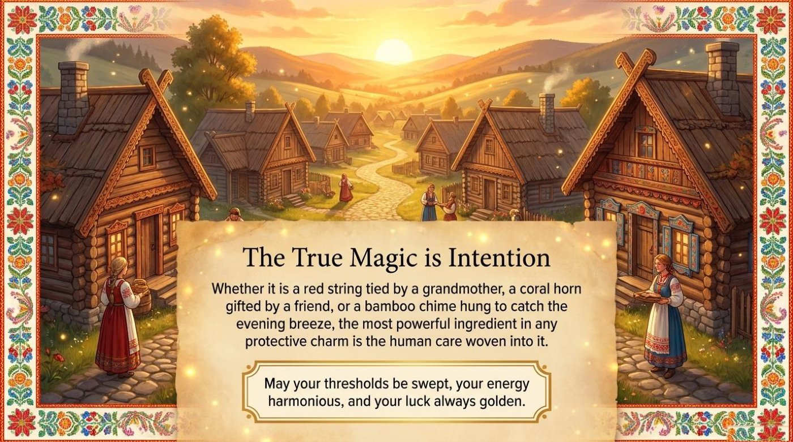
“May your thresholds be swept, your energy harmonious, and your luck always golden.”